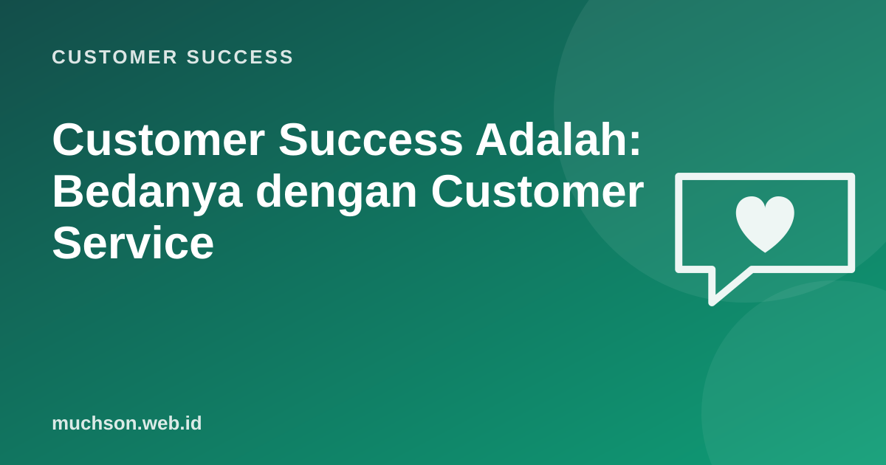

Beranda › Artikel › Customer Success
Customer SuccessCustomer Success Adalah: Bedanya dengan Customer Service
Customer service menjawab ketika pelanggan menghubungi. Customer success menghubungi pelanggan sebelum mereka punya alasan untuk pergi. Perbedaan sederhana ini mengubah cara perusahaan menjaga pendapatan, terutama bisnis berlangganan yang hidup dari perpanjangan kontrak bulan demi bulan.

Reaktif vs proaktif
Keduanya saling membutuhkan. Tim service yang hebat menyelesaikan masalah dengan cepat; tim success memastikan masalah yang sama tidak terus berulang dan pelanggan mendapat nilai dari produk.
Mengapa bisnis berlangganan membutuhkannya
Dalam model langganan, biaya mendapatkan pelanggan sering baru tertutup setelah beberapa bulan. Pelanggan yang berhenti di bulan ketiga bisa berarti kerugian. Reichheld dan Sasser dalam "Zero Defections" (Harvard Business Review, 1990) menunjukkan betapa besarnya pengaruh mengurangi pelanggan yang pergi terhadap laba, karena pelanggan lama cenderung membeli lebih banyak dan lebih murah dilayani.
Apa yang dikerjakan Customer Success Manager (CSM)
Metrik yang biasa dipakai
| Metrik | Mengukur |
|---|---|
| Gross revenue retention (GRR) | Pendapatan yang dipertahankan tanpa ekspansi |
| Net revenue retention (NRR) | Pendapatan dipertahankan termasuk ekspansi |
| Logo churn | Persentase pelanggan yang berhenti |
| Customer health score | Gabungan sinyal risiko dan kesehatan |
| Time to value | Waktu sampai pelanggan merasakan manfaat |
| NPS / CSAT | Sikap dan kepuasan pelanggan |
Customer success bukan tim penjualan yang berganti nama. Bila CSM hanya dikejar target upsell, pelanggan akan merasakannya dan kepercayaan turun. Ekspansi sebaiknya hasil dari nilai yang terbukti.
Tanya jawab
Apakah UMKM butuh tim customer success?
Keterampilan apa yang dibutuhkan CSM?
Apakah customer success hanya untuk SaaS?
Sumber dan bacaan lanjut
- Reichheld dan Sasser (1990): Zero Defections, Quality Comes to Services, HBR (ringkasan Bain)
- Churn rate: cara menghitung dan menurunkan (artikel terkait)
- Customer health score (artikel terkait)